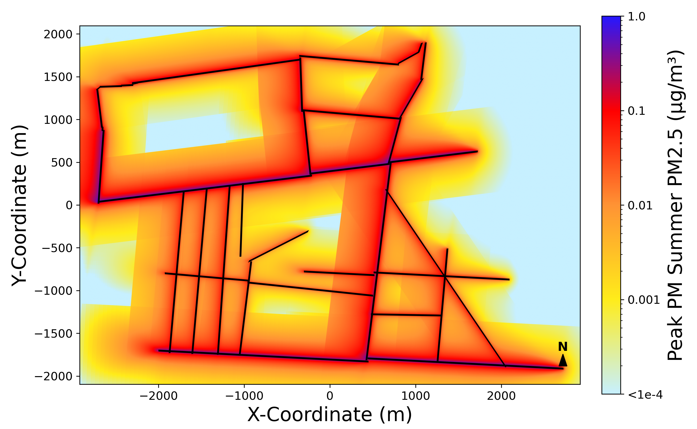

Computational Air Pollution Model
01 Problem
- High-spatial-resolution vehicular emissions data is vital for formulating strategies to mitigate adverse health effects from air pollution.
- MOVES and R-LINE are high-resolution computational models.
- However, running these established models for the thousands of roads in a city is extremely computationally expensive and slow.
02 My approach
- Create a dictionary of unit characteristic roads to minimize reruns of these large computational models.
- Develop road bins based on season, time of day, and traffic volume.
- Formulate a superposition algorithm on a 50m unit road to enable road length flexibility without reruns.
03 Results/Case Study: Whitehall, OH
To demonstrate my model's performance, I applied the pipeline to a road network of 36 roads with varying traffic volumes and lengths.
